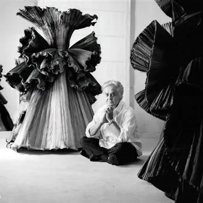

ven 23 ott · dalle 18:00
Roberto Capucci - nuove sale al Museo della Moda e delle Arti Applicate
Il Museo della Moda e delle Arti Applicate apre al pubblico le nuove sale dedicate all'universo creativo di Roberto Capucci. Il percorso espositivo prende avvio dai bozzetti preparatori per approfondire i temi che hanno alimentato la ricerca artistica del Maestro e dato forma ad…
 Indicazioni
Indicazioni
- Costi e prenotazioni
- Costo non indicato · Prenotazione non indicata
- Programma
- Programma da verificare. Apri la fonte ufficiale per orari e possibili aggiornamenti.
- In caso di maltempo
- Nessuna indicazione specifica pubblicata.
- Note
- Acquisito automaticamente dalla fonte.
L’EVENTO
Descrizione completa
Il Museo della Moda e delle Arti Applicate apre al pubblico le nuove sale dedicate all'universo creativo di Roberto Capucci.
Il percorso espositivo prende avvio dai bozzetti preparatori per approfondire i temi che hanno alimentato la ricerca artistica del Maestro e dato forma ad alcune delle sue creazioni più celebri.
Nelle nuove sale, troverà posto una selezione di abiti provenienti dalla Fondazione Roberto Capucci che raccontano una visione della moda che va oltre la funzione dell'abito e si avvicina all'opera d'arte, tra richiami alla natura, all'architettura, alla scultura e al colore.
Inaugurazione venerdì 23 ottobre alle ore 18.00
In occasione di ApritiModa, sabato 24 e domenica 25 ottobre verranno proposte anche delle visite guidate gratuite comprese nel biglietto d'ingresso al Museo, con partenze alle ore 10.30, 11.30, 16.00 e 17.30.
Roberto Capucci (Roma, 1930) comincia da giovanissimo la sua carriera con il gruppo di creativi selezionato a partire dal 1951 da Giovan Battista Giorgini, ritenuto il padre della moda italiana. La sua è una formazione artistica classica, e ciò determina un approccio alla moda totalmente diverso da quello dei suoi colleghi; l’ispirazione e il suo iter progettuale sono molto più vicini a quelli di un artista che a quelli di un couturier. Questo spirito accompagna tutto il percorso di Capucci, che sarà sempre considerato un artista prestato alla moda.
Dopo avere realizzato per una clientela esclusiva abiti entrati nella storia del costume, nel 1995 è invitato a creare dodici opere per il Centenario della Biennale di Venezia. Nascono delle vere e proprie sculture in tessuto, fatte per essere esposte e non indossate. Comincia così un periodo di partecipazioni a mostre nei musei di tutto il mondo.
IL PROGRAMMA
Programma e orari
Appuntamenti raccolti dalle fonti elencate. Dove manca un orario, non è ancora disponibile in questa scheda.
Programma pubblicato
- Dal 2026-10-23 al 2026-10-23
INFORMAZIONI UTILI
Prima di partire
- Controllare la fonte prima di partire.
ORGANIZZAZIONE